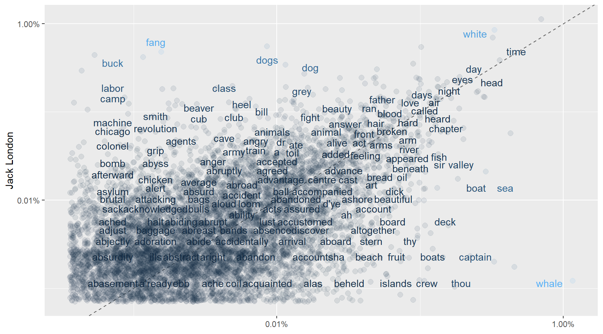
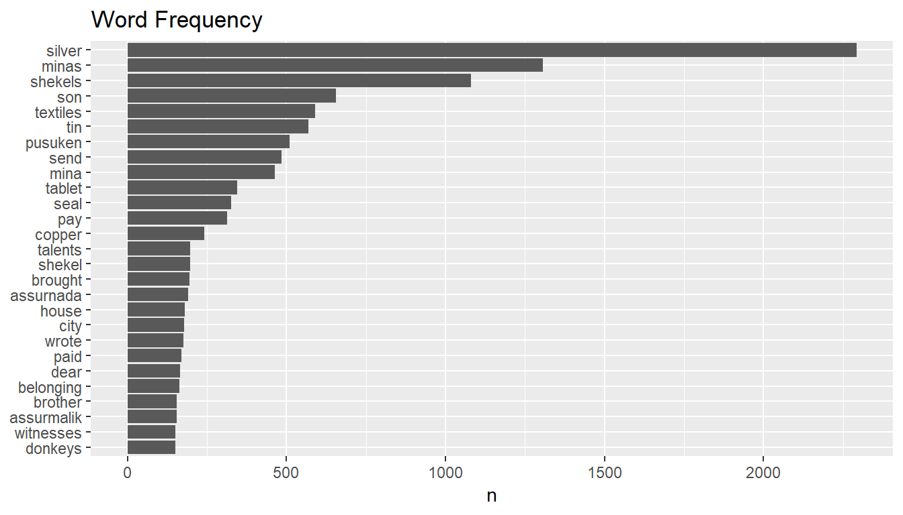

This section consists of 2 Chapters. Chapter 1 talks about the fundamentals of text analysis using famous books from Tolkien, J.R.R Martin, Jack London and Herman Merville. Chapter 2 builds on these concepts and tells a thrilling story which was liked and retwitted by leading data scientists: Julia Silge and David Robinson on Twitter. Chapter 2 has also a Shiny App which lives in a server I fired up on AWS.
Chapter 1
Introuction to Unstructure Text Data Analysis using LDA
When we are dealing with a collection of documents, such as all the text files from the Bronze Age Assyrian civilization, we may want to divide them into natural groups like “Trade” and “Warfare”.
LDA is a popular method for fitting such models: (a) It considers each document as a mixture of topics (b) And each topic as a mixture of words.
What does this mean?
Let’s say we have a 2 topic LDA model on ancient Assyrian texts. The first text script has a probability of 85% coming from topic 1, and a probability of 15% coming from topic 2 (a).
In “Warfare” and “Trade” example above, the most frequent words in “warfare” topic can be: [“massacre”, “head”, “enslave”, “burn”], while “Trade” topic may contain: [“amphora”, “cargo”, “pay”, “ship”] (b).
LDA is a method estimating both of these (a and b) at the same time. It is important to realize that this is an unsupervised method. We don’t have these “Trade” and “Warfare” labels at the beginning. And the analyst decides how many topics there will be.
How should a a full tidy text analysis look like?
The overall objective is to process our raw data and to arrive at some meaningful insights. The end results are visualized using libraries like ggplot, igrapgh, ggraph. We handle the data wrangling and processing part using a “tidy” approach (heavily using tidyverse, regexp). Converting to and from non-tidy formats is a crucial skill to have.
As a first step it makes sense to calculate some word frequencies by simple counts and tf_idf. It can be pseudo code as follows:
# get_data() & preprocess() %>%
# unnest_tokens() >> tidy text %>%
# anti_join(stopwords) %>%
# summarize, group_by, count(words), tf-idf %>%
# visualize()Next natural step can be getting some sentiments from the collection of texts we are looking into. Are these negative or positive texts for example? Or which parts or chapters have what kind of sentiments. A summary pseudo code can be:
# decide/find the lexicons you want to use %>%
# inner_join(lexicon) %>%
# group_by and do summaries %>%
# visualize()We might also want to look at into ngrams which can capture two or three words in a row and do frequency and sentiment analysis on them. Pseudo code can go like:
# unnest_tokens using ngram %>%
# filtering where needed and then apply tf-idf %>%
# visualize %>%
# apply sentiment analysis on ngram this time%>%
# visualize()In some certain scenarios, we might be interested in topic modeling where we want to divide our text into natural groups. This can be about feeding all the articles from a newspaper into the algorithm, give how many topics we want as an input and expect the machine to give output topics related to “economy”, “politics” and “sports”. It follows a high-level pseudo code:
# do document term matrix %>%
# apply LDA to do get topics %>%
# work on your topics using dplyr tidyr as usual, tidy model %>%
# visualize()How does this work in practice? We will do a short tidy text analysis where we extract topics and explain why they are good or bad:
library(stringr)
library(dplyr)
library(tidyr)
library(tidytext)
library(ggplot2)
library(ggthemes)
library(gridExtra)
library(topicmodels)
library(tm)We will load 2 books from the Game of Thrones series, The Lord of the Rings series and The Hobbit. These are fantasy fiction novels. They all talk about lords, ladies, kings, prices, wars etc. We will see how we can create two natural groups from this collection.
The underlying philosophy is to be able to use this LDA method even when we are not sure what we are looking for.
However, in this below setup we already know that we have 2 authors only, and thus, 2 natural groups. This can get confusing and even useless if we try to extract 4-5 topics out of them.
#load the books
GoT2 <- readLines("data/textdata/GoT2.txt") %>%
data_frame() %>%
mutate(title = "A Clash of Kings")
GoT3 <- readLines("data/textdata/GoT3.txt") %>%
data_frame() %>%
mutate(title = "A Storm of Swords")
lotr <- readLines("data/textdata/lotr.txt") %>% #it contains the entire Lord of The Rings series
data_frame() %>%
mutate(title = "Lord of the Rings")
hobbit <- readLines("data/textdata/hobbit.txt") %>%
data_frame() %>%
mutate(title = "The Hobbit")
books <- bind_rows(list(GoT2, GoT3, lotr, hobbit))
colnames(books) <- c("text", "title")
my_stop_words <- data_frame(word = c('page'))# divide into documents, each representing one chapter
by_chapter <- books %>%
group_by(title) %>%
mutate(chapter = cumsum(str_detect(text, regex("^chapter ", ignore_case = TRUE)))) %>%
ungroup() %>%
filter(chapter > 0) %>%
unite(document, title, chapter)# split into words
by_chapter_word <- by_chapter %>%
unnest_tokens(word, text)
# find document-word counts
word_counts <- by_chapter_word %>%
anti_join(stop_words) %>%
anti_join(my_stop_words) %>%
count(document, word, sort = TRUE) %>%
ungroup()
word_counts## # A tibble: 239,860 x 3
## document word n
## <chr> <chr> <int>
## 1 A Storm of Swords_80 ser 226
## 2 A Storm of Swords_80 lord 210
## 3 A Storm of Swords_80 son 146
## 4 A Clash of Kings_68 ser 143
## 5 Lord of the Rings_1 frodo 140
## 6 A Clash of Kings_68 lord 129
## 7 Lord of the Rings_1 bilbo 121
## 8 Lord of the Rings_39 pippin 105
## 9 Lord of the Rings_49 sam 105
## 10 A Storm of Swords_80 lady 104
## # ... with 239,850 more rows‘ser’ means ‘sir’ in the world of Game of Thrones. We see this word ‘ser’ at the top.
#document term matrix
chapters_dtm <- word_counts %>%
cast_dtm(document, word, n)## Warning: Trying to compute distinct() for variables not found in the data:
## - `row_col`, `column_col`
## This is an error, but only a warning is raised for compatibility reasons.
## The operation will return the input unchanged.chapters_dtm## <<DocumentTermMatrix (documents: 224, terms: 23982)>>
## Non-/sparse entries: 239860/5132108
## Sparsity : 96%
## Maximal term length: 32
## Weighting : term frequency (tf)We can call these terms by using the Term() function
terms <- Terms(chapters_dtm)
head(terms)## [1] "ser" "lord" "son" "frodo" "bilbo" "pippin"Now it is time to use LDA algorithm to create a 2-topic-model. We know that there are 2 autors as discussed before. In other problems we could try different k values and try to come up with some meaningful results.
chapters_lda <- LDA(chapters_dtm, k = 2, control = list(seed = 1234))
chapters_lda## A LDA_VEM topic model with 2 topics.#per-topic-per-word probabilities
chapter_topics <- tidy(chapters_lda, matrix = "beta")
chapter_topics## # A tibble: 47,964 x 3
## topic term beta
## <int> <chr> <dbl>
## 1 1 ser 8.82e-14
## 2 2 ser 9.23e- 3
## 3 1 lord 2.17e- 3
## 4 2 lord 1.15e- 2
## 5 1 son 1.03e- 3
## 6 2 son 2.51e- 3
## 7 1 frodo 9.76e- 3
## 8 2 frodo 1.90e-41
## 9 1 bilbo 4.15e- 3
## 10 2 bilbo 6.53e-38
## # ... with 47,954 more rowsWe can see that we arrived to a one-topic-per-term-per-row format. We see the probabilities of a term coming from each topic. For example, the term “ser” has almost zero probability of being generated from topic 1, but it has a high probability of coming from topic 2.
Now we will look into top terms in the topics
top_terms <- chapter_topics %>%
group_by(topic) %>%
top_n(5, beta) %>%
ungroup() %>%
arrange(topic, -beta)
top_terms## # A tibble: 10 x 3
## topic term beta
## <int> <chr> <dbl>
## 1 1 frodo 0.00976
## 2 1 sam 0.00697
## 3 1 gandalf 0.00660
## 4 1 dark 0.00500
## 5 1 time 0.00477
## 6 2 lord 0.0115
## 7 2 ser 0.00923
## 8 2 tyrion 0.00455
## 9 2 king 0.00448
## 10 2 jon 0.00436and visualize
top_terms %>%
mutate(term = reorder(term, beta)) %>%
ggplot(aes(term, beta, fill = factor(topic))) +
geom_col(show.legend = FALSE) +
facet_wrap(~ topic, scales = "free") + theme_fivethirtyeight() +
coord_flip()It is amazing. The heroes and the concepts are separated correctly. The algorithm was able to classify the 2 authors. This is nice. However, I have set the k = 2 myself. I knew that there were 2 autors and topics. We should also keep in mind that the Lord of the Rings was a continuation of the Hobbit.
If these information is not available to us, it would be hard to evaluate and understand. It can also give misleading results.
Each document in this analysis represented a single chapter. Now imagine all the chapters are mixed up and we are trying to figure out which chapter belongs to which autor(topic). Can we do that?
per-document-per-topic probabilities : γ(“gamma”)
chapters_gamma <- tidy(chapters_lda, matrix = "gamma")
chapters_gamma## # A tibble: 448 x 3
## document topic gamma
## <chr> <int> <dbl>
## 1 A Storm of Swords_80 1 0.00000533
## 2 A Clash of Kings_68 1 0.00000953
## 3 Lord of the Rings_1 1 1.000
## 4 Lord of the Rings_39 1 1.000
## 5 Lord of the Rings_49 1 1.000
## 6 A Storm of Swords_67 1 0.0000236
## 7 A Storm of Swords_19 1 0.0000176
## 8 Lord of the Rings_2 1 1.000
## 9 Lord of the Rings_10 1 1.000
## 10 Lord of the Rings_7 1 1.000
## # ... with 438 more rowsEach gamma you see here is estimated proportion of words from that chapter that are generated from that topic. For example, we estimate that each word in the Storm of Swords Chapter 80 has only 0.000532% probability of coming from topic 1 (and topic 1 is JRR Tolkien, the author of the Lord of the Rings).
chapters_gamma <- chapters_gamma %>%
separate(document, c("title", "chapter"), sep = "_", convert = TRUE)
chapters_gamma## # A tibble: 448 x 4
## title chapter topic gamma
## <chr> <int> <int> <dbl>
## 1 A Storm of Swords 80 1 0.00000533
## 2 A Clash of Kings 68 1 0.00000953
## 3 Lord of the Rings 1 1 1.000
## 4 Lord of the Rings 39 1 1.000
## 5 Lord of the Rings 49 1 1.000
## 6 A Storm of Swords 67 1 0.0000236
## 7 A Storm of Swords 19 1 0.0000176
## 8 Lord of the Rings 2 1 1.000
## 9 Lord of the Rings 10 1 1.000
## 10 Lord of the Rings 7 1 1.000
## # ... with 438 more rows# reorder titles in order of topic 1, topic 2, etc before plotting
chapters_gamma %>%
mutate(title = reorder(title, gamma * topic)) %>%
ggplot(aes(factor(topic), gamma)) +
geom_boxplot() +
facet_wrap(~ title)We notice that almost all of the chapters from The Lord of The Rings and The Game of Thrones series were uniquely identified as a single topic each.
Are there any cases where the topic most associated with a chapter belonged to another autor?
chapter_classifications <- chapters_gamma %>%
group_by(title, chapter) %>%
top_n(1, gamma) %>%
ungroup()
chapter_classifications## # A tibble: 224 x 4
## title chapter topic gamma
## <chr> <int> <int> <dbl>
## 1 Lord of the Rings 1 1 1.000
## 2 Lord of the Rings 39 1 1.000
## 3 Lord of the Rings 49 1 1.000
## 4 Lord of the Rings 2 1 1.000
## 5 Lord of the Rings 10 1 1.000
## 6 Lord of the Rings 7 1 1.000
## 7 The Hobbit 5 1 1.000
## 8 Lord of the Rings 22 1 1.000
## 9 Lord of the Rings 21 1 1.000
## 10 Lord of the Rings 51 1 1.000
## # ... with 214 more rowsFind the misclassified chapters
book_topics <- chapter_classifications %>%
count(title, topic) %>%
group_by(title) %>%
top_n(1, n) %>%
ungroup() %>%
transmute(consensus = title, topic)
chapter_classifications %>%
inner_join(book_topics, by = "topic") %>%
filter(title != consensus)## # A tibble: 224 x 5
## title chapter topic gamma consensus
## <chr> <int> <int> <dbl> <chr>
## 1 Lord of the Rings 1 1 1.000 The Hobbit
## 2 Lord of the Rings 39 1 1.000 The Hobbit
## 3 Lord of the Rings 49 1 1.000 The Hobbit
## 4 Lord of the Rings 2 1 1.000 The Hobbit
## 5 Lord of the Rings 10 1 1.000 The Hobbit
## 6 Lord of the Rings 7 1 1.000 The Hobbit
## 7 The Hobbit 5 1 1.000 Lord of the Rings
## 8 Lord of the Rings 22 1 1.000 The Hobbit
## 9 Lord of the Rings 21 1 1.000 The Hobbit
## 10 Lord of the Rings 51 1 1.000 The Hobbit
## # ... with 214 more rowsIt turns out there is chapter misclassification only within the same autor. Otherwise, we classified the autors perfectly.
I was expecting to have misclassification of chapters within the same author. Because these books are continuation of each other: The same heroes and events.
LDA can be a good approach when we have a huge collection of unlabeled texts and we are trying to make sense of it. However, we should not forget that we are setting up how many topics will be generated ourselves.
What is unnest_token function and how we can use it:
It is a function from Tidytext library which restructures text: Creates one token for each row. It splits a text column (this is our input) into tokens (like words). It helps us doing this tokenization.
Have you ever checked what gutenbergr package does:
Project Gutenberg digitizes the books for which copyright has expired with the help of volunteers. Gutenbergr R package provides these books to R users. We can download and process these books using this library.
How does a sentiment lexicon work:
They are like dictionaries which matches words with their sentiment or emotion. Such as classifying them into Positive - Negative - Neutral categories. Once we match the words in our text with lexicon, we can start analyzing the frequencies. Even if we dont know the language in which the text has been written, we can have an overall understanding.
Why inner_join is important to us here:
We match the words in our text with the sentiments in the lexicon. There can be lots of words which are not available in the lexicon. Similarly, there can be lots of words in the lexicon which are not mentioned in our text. inner_join brings us the intersection between our text and the lexicon. So that we can go ahead with our analysis with the words we have in the lexicon.
#tidy_books %>%
# filter(book == "Emma") %>%
# inner_join(nrcjoy) %>%
# count(word, sort = TRUE)what tf-idf algorithm does:
It is a heuristic approach which tells us how importand a word is in the text we are analyzing. It computes the frequencies (tf) and adds a tweak(idf). This tweak is about how rarely that word is used: It reduces the importance of a word used many times in the text and increases the importance of a word not used that much.
Why do we want to do tokenization by bigram:
If I am trying to capture the right sentiment then I may use bigram.
After removing the stopwords I may get a list of high frequency words like ‘good’ ‘nice’. However if these are used together with the word ‘not’ then in fact these are negative phrases: ‘not good’, ‘not nice’. It would be a critical error if I dont look into this.
Now let’s get our hands a bit dirty with these. Pick two or more authors that you are familiar with, download their texts using the gutenbergr package, and do a basic analysis of word frequencies and TF-IDF
library(gutenbergr)
library(stringr)
library(dplyr)
library(tidytext)
library(ggplot2)
library(ggthemes)
library(gridExtra)
library(scales)##
## Attaching package: 'scales'## The following objects are masked from 'package:psych':
##
## alpha, rescalegutenberg_works(str_detect(author, "Herman")) %>%
select(gutenberg_id, title) %>%
head()## # A tibble: 6 x 2
## gutenberg_id title
## <int> <chr>
## 1 15 Moby Dick
## 2 1900 Typee: A Romance of the South Seas
## 3 2489 Moby Dick; Or, The Whale
## 4 2500 Siddhartha
## 5 2694 I and My Chimney
## 6 4045 Omoo: Adventures in the South SeasGet the metadata
meta <- as.tbl(gutenberg_metadata)
names(meta)## [1] "gutenberg_id" "title" "author"
## [4] "gutenberg_author_id" "language" "gutenberg_bookshelf"
## [7] "rights" "has_text"Find another way to see Moby Dick and White Fang novels
meta %>%
filter(author == "Melville, Herman",
language == "en",
gutenberg_id == 2489,
has_text,
!str_detect(rights, "Copyright")) %>%
distinct(title, gutenberg_id)## # A tibble: 1 x 2
## gutenberg_id title
## <int> <chr>
## 1 2489 Moby Dick; Or, The Whalemeta %>%
filter(author == "London, Jack",
language == "en",
title == 'White Fang',
has_text,
!str_detect(rights, "Copyright")) %>%
distinct(title, gutenberg_id)## # A tibble: 1 x 2
## gutenberg_id title
## <int> <chr>
## 1 910 White FangDownload the best books from Jack London and Herman Melville
LondonBooks <- gutenberg_download(c(910, 215, 1164))
MervilleBooks <- gutenberg_download(c(2500, 2489, 1900))Convert them to Tidy format
tidy_London <- LondonBooks %>%
unnest_tokens(word, text) %>%
anti_join(stop_words)
tidy_Merville <- MervilleBooks %>%
unnest_tokens(word, text) %>%
anti_join(stop_words)Have a look at the top 10 words in these books
tidy_London %>%
count(word, sort = TRUE) %>%
head(10)tidy_Merville %>%
count(word, sort = TRUE) %>%
head(10)It doesnt surprise me to see “Whale” and “White Fang” on the top. The wolf and the the whale are both natural hunters in the wild these autors wrote about.
p1 <- tidy_London %>%
count(word, sort = TRUE) %>%
filter(n > 250) %>%
mutate(word = reorder(word, n)) %>%
ggplot(aes(word, n)) + geom_col() + xlab(NULL) + coord_flip() +
ggtitle("Jack London") +
theme_fivethirtyeight()
p2 <- tidy_Merville %>%
count(word, sort = TRUE) %>%
filter(n > 250) %>%
mutate(word = reorder(word, n)) %>%
ggplot(aes(word, n)) + geom_col() + xlab(NULL) + coord_flip() +
ggtitle("Herman Merville") +
theme_fivethirtyeight()
grid.arrange(p1, p2, ncol=2)library(tidyr)
frequency <- bind_rows(mutate(tidy_Merville, author = "Herman Merville"),
mutate(tidy_London, author = "Jack London")) %>%
mutate(word = str_extract(word, "[a-z']+")) %>%
count(author, word) %>%
group_by(author) %>%
mutate(proportion = n / sum(n)) %>%
select(-n) %>%
spread(author, proportion) %>%
gather(author, proportion, `Herman Merville`)ggplot(frequency, aes(x = proportion, y = `Jack London`, color = abs(`Jack London` - proportion))) +
geom_abline(color = "gray40", lty = 2) +
geom_jitter(alpha = 0.1, size = 2.5, width = 0.3, height = 0.3) +
geom_text(aes(label = word), check_overlap = TRUE, vjust = 1.5) +
scale_x_log10(labels = percent_format()) +
scale_y_log10(labels = percent_format()) +
theme(legend.position="none") +
labs(y = "Jack London", x = NULL)
One guy is focusing on the wolves (fang meaning wolf) and the other is talking about the whales in general, nicely visible in the plot. Both are the most clever hunters in the wild. One ruling the oceans and the other the land. Wolf and Whale make our autors different.
We see that they are sharing quite a lot words. These are scattered around the 45 degree line. Lets see the correlation score.
cor.test(data = frequency[frequency$author == "Herman Merville",],
~ proportion + `Jack London`)##
## Pearson's product-moment correlation
##
## data: proportion and Jack London
## t = 50.568, df = 8056, p-value < 2.2e-16
## alternative hypothesis: true correlation is not equal to 0
## 95 percent confidence interval:
## 0.4741043 0.5072557
## sample estimates:
## cor
## 0.4908577There is correlation but not so high…
Now lets see tf-idf to see the most important words in these books.
LondonBooks <- gutenberg_download(c(910, 215, 1164), meta_fields = "title")
MervilleBooks <- gutenberg_download(c(2500, 2489, 1900), meta_fields = "title")
LondonBooks %>%
count(title)## # A tibble: 3 x 2
## title n
## <chr> <int>
## 1 The Call of the Wild 3031
## 2 The Iron Heel 9605
## 3 White Fang 7266MervilleBooks %>%
count(title)## # A tibble: 3 x 2
## title n
## <chr> <int>
## 1 Moby Dick; Or, The Whale 23571
## 2 Siddhartha 3921
## 3 Typee: A Romance of the South Seas 11183London_words <- LondonBooks %>%
unnest_tokens(word, text) %>%
count(title, word, sort = TRUE) %>%
ungroup()
London_total_words <- London_words %>%
group_by(title) %>%
summarize(total = sum(n))
London_words <- left_join(London_words, London_total_words)
Merville_words <- MervilleBooks %>%
unnest_tokens(word, text) %>%
count(title, word, sort = TRUE) %>%
ungroup()
Merville_total_words <- Merville_words %>%
group_by(title) %>%
summarize(total = sum(n))
Merville_words <- left_join(Merville_words, Merville_total_words)London_words <- London_words %>%
bind_tf_idf(word, title, n)
head(London_words)## # A tibble: 6 x 7
## title word n total tf idf tf_idf
## <chr> <chr> <int> <int> <dbl> <dbl> <dbl>
## 1 The Iron Heel the 6539 88675 0.0737 0 0
## 2 White Fang the 5148 72920 0.0706 0 0
## 3 The Iron Heel and 3407 88675 0.0384 0 0
## 4 The Iron Heel of 3319 88675 0.0374 0 0
## 5 White Fang and 3004 72920 0.0412 0 0
## 6 The Call of the Wild the 2283 32121 0.0711 0 0Merville_words <- Merville_words %>%
bind_tf_idf(word, title, n)
head(Merville_words)## # A tibble: 6 x 7
## title word n total tf idf tf_idf
## <chr> <chr> <int> <int> <dbl> <dbl> <dbl>
## 1 Moby Dick; Or, The Whale the 14440 216060 0.0668 0 0
## 2 Typee: A Romance of the South Se~ the 8564 114725 0.0746 0 0
## 3 Moby Dick; Or, The Whale of 6603 216060 0.0306 0 0
## 4 Moby Dick; Or, The Whale and 6428 216060 0.0298 0 0
## 5 Typee: A Romance of the South Se~ of 5093 114725 0.0444 0 0
## 6 Moby Dick; Or, The Whale a 4716 216060 0.0218 0 0London_words %>%
select(-total) %>%
arrange(desc(tf_idf)) %>%
head()## # A tibble: 6 x 6
## title word n tf idf tf_idf
## <chr> <chr> <int> <dbl> <dbl> <dbl>
## 1 The Call of the Wild buck 313 0.00974 0.405 0.00395
## 2 The Iron Heel ernest 318 0.00359 1.10 0.00394
## 3 The Call of the Wild thornton 81 0.00252 1.10 0.00277
## 4 White Fang grey 150 0.00206 1.10 0.00226
## 5 The Call of the Wild spitz 60 0.00187 1.10 0.00205
## 6 The Iron Heel labor 163 0.00184 1.10 0.00202Merville_words %>%
select(-total) %>%
arrange(desc(tf_idf)) %>%
head()## # A tibble: 6 x 6
## title word n tf idf tf_idf
## <chr> <chr> <int> <dbl> <dbl> <dbl>
## 1 Siddhartha siddhart~ 374 0.00952 1.10 0.0105
## 2 Siddhartha govinda 140 0.00356 1.10 0.00391
## 3 Typee: A Romance of the South Seas kory 236 0.00206 1.10 0.00226
## 4 Moby Dick; Or, The Whale whale 1094 0.00506 0.405 0.00205
## 5 Siddhartha kamala 72 0.00183 1.10 0.00201
## 6 Typee: A Romance of the South Seas toby 189 0.00165 1.10 0.00181p3 <- London_words %>%
arrange(desc(tf_idf)) %>%
mutate(word = factor(word, levels = rev(unique(word)))) %>%
group_by(title) %>%
top_n(10) %>%
ungroup %>%
ggplot(aes(word, tf_idf, fill = title)) +
geom_col(show.legend = FALSE) +
labs(x = NULL, y = "tf-idf") +
facet_wrap(~title, ncol = 2, scales = "free") +
theme_fivethirtyeight() + ggtitle("Jack London") +
coord_flip()
p4 <- Merville_words %>%
arrange(desc(tf_idf)) %>%
mutate(word = factor(word, levels = rev(unique(word)))) %>%
group_by(title) %>%
top_n(10) %>%
ungroup %>%
ggplot(aes(word, tf_idf, fill = title)) +
geom_col(show.legend = FALSE) +
labs(x = NULL, y = "tf-idf") +
facet_wrap(~title, ncol = 2, scales = "free") +
theme_fivethirtyeight() + ggtitle("Herman Merville") +
coord_flip()
grid.arrange(p3, p4, nrow=2)Now we completed the first chapter. If you followed along you already know how to do your own analysis by now. Congrats!
Chapter 2
I analyze a large dataset of commercial records produced by Assyrian merchants in the 19th Century BCE…
Allright, I don’t have any history, archeology or any social science background other than watching Indiana Jones and playing Lara Croft’s Tomb Raider. On the other hand, I did some google search to give you the context and placed them here.
The aim of the project is to make sense of some text which I have no idea about. However, If you give some feedback I will be happy to update the post.
This is about an ancient language from the Bronze Age, meaning like 4000 years ago.
And this is how it looked like:
Some smart people decrypted these languages. For example
nu ninda en e-iz-za-te-ni wa-a-tar-ma e-ku-ut-te-ni
Translation:
“Now you will eat bread and drink water”
wa-a-tar means water. ninda means bread. Quite familiar isn’t it?
Our data looks like this:
This is a txt file.

But how did I get here? It started with a tweet by Gabor Bekes:
I contacted the authors of this academic paper from the University of Virginia. They were so kind and provided me these text files:

Archeologists have escavated these tablets during the past 200 years.
An excavated tablet looks like this:

These people lived 4000 years ago in the Middle East and the Asia Minor
We will start by loading our documents.
#we have a collection of 4 documents
oare1 <- readLines("data/textdata/OARE_01.txt") %>%
data_frame(file = 'OARE_1') %>%
rename('word' = '.')
oare2 <- readLines("data/textdata/OARE_02.txt") %>%
data_frame(file = 'OARE_2') %>%
rename('word' = '.')
oare3 <- readLines("data/textdata/OARE_03.txt") %>%
data_frame(file = 'OARE_3') %>%
rename('word' = '.')
oare4 <- readLines("data/textdata/OARE_04.txt") %>%
data_frame(file = 'OARE_4') %>%
rename('word' = '.')
txt <- bind_rows(list(oare1, oare2, oare3, oare4))
colnames(txt) <- c("text", "title")How many tablets do we have? Each record has an original language indicator “logosyllabic, Akkadian”. We can simply count them.
str_c("We have ", nrow(txt[grep('^logosyllabic', txt$text),]), " tablets") %>%
pander::pander()We have 689 tablets
We have many unwanted words and phrases. Some simple regular expressions will help us.
#see the lines give the information regarding the Creator of the record
head(txt[grep('^Creator', txt$text),], 3)## # A tibble: 3 x 2
## text title
## <chr> <chr>
## 1 Creator(s): Stratford, Edward P. OARE_1
## 2 Creator(s): Stratford, Edward P. OARE_1
## 3 "Creator(s): Stratford, Edward P. (2016-12-24) " OARE_1#removing them
txt <- txt %>%
anti_join(txt[grep('^Creator', txt$text),])This is one way of cleaning such unwanted words… We can create a list of them, match and then anti_join easily.
toMatch is a vector of unwanted character strings with some regular expressions just like above example. We remove them from our text below.
library(pander)
matches <- unique (grep(paste(toMatch,collapse="|"),
txt$text, value=TRUE))
#removing them
txt <- txt %>%
anti_join(data.frame(text = matches))
original_text <- txt # keep an untouched copy
#take a look at one commercial record now
pander(txt[149:150, 1])| text |
|---|
| 4-6I entrusted 15 minas 54 shekels silver under my seal, 16 shekels its shipping charge, to Assur-samsi on behalf of Al-ili. |
| 7-8There, make sure the representative of Al-ili recieves the silver and it’s shipping charge. 9-11I gave 5 1/2 minas silver of my own to Assur-samsi for purchases. |
Here we are reading a business letter from a guy called Abela to Idnaya. Just a quick look makes it clear that these people were not savages at all. Freight charges, clearing a debt on behalf of another entity and stamps (seals) are all in place.
The paragraph is almost clean. Next, we need to remove the numbers.
# Remove numbers using removeNumber function from tm library
library(tm)
txt$text <- txt$text %>%
removeNumbers() %>%
removePunctuation() %>%
tolower() %>% #in fact unnest_tokens function handling this
stripWhitespace()Now let’s have a quick look at the word frequencies
txt %>%
unnest_tokens(word, text) %>%
anti_join(stop_words) %>%
count(word, sort = TRUE) %>%
filter(n > 150) %>%
mutate(word = reorder(word, n)) %>%
ggplot(aes(word, n)) + geom_col() + xlab(NULL) + coord_flip() +
ggtitle("Word Frequency")
It looks like these people were sending and receiving textiles, tin, and copper. Transportation was mostly depending on donkeys and the payments were in silvers most of the time. The units of measurement (like the weight) were shekels, minas, and talents. Example: Abele sends 5 talents of gold to Ibalaya for 200 shekels of silver, on behalf of Iddin-Istar.
Looking at the frequency plot again, what does pusuken mean? It is repeating more than 500 times…
head(original_text[str_detect(original_text$text, "Pusu-ken"), 1], 4) %>%
pander()| text |
|---|
| 1-3To Amur-Istar and Pusu-ken from Kuzallum: |
| 1-2From su-hubur to Pusu-ken: |
| 1-7Zupa seized us against the sons of Pusu-ken and Zupa said to the sons of Pusu-ken, “Your father took the silver stated in my sealed tablets. |
| 7-9Why is it that Suen-re’i detains me? 10-18The sons of Pusu-ken (responded): “Our father received the silver of the sealed tablet of Zupa. Release it and we will give you the matter.” |
A family business! It turns out Pusuken was the most famous businessman. Probably he was the leader of a powerful family controlling most of the trade happening in the region. His sons were handling the transactions. Assurnada and Assurmalik are the other two notable tradesmen coming out from the frequency table.
Another frequent word is ‘son’. Let’s find out why.
tail(original_text[str_detect(original_text$text, "son"), 1], 5)[c(1, 3), ] %>%
pander()| text |
|---|
| Iddin-Istar son of Assur-nada owes 5 5/6 |
| 15-18Witnesses: Burqanim son of Kakkabanim son of su-Istar son of suaya |
son of Assurnada, son of Inahili, son of Kakkabanim… Of course, these are family names. That’s why it repeats a lot.
Now we have a fairly good understanding of the most frequent words. Let’s get a big picture of the ancient cities mentioned in our text.
Ancient city names are easily available online. I created a dataframe called “Cities” which contain their geolocations. We will join information into this dataframe from our text. Our objective is to come up with some metric which can represent the trading power of these cities, and visualize them.
library(tidyr)
cities <- cities %>%
left_join(original_text %>%
unnest_tokens(word, text) %>%
filter(word %in% tolower(cities$cityName)) %>%
count(word, sort = TRUE) %>%
rename(cityName = word),
by = 'cityName')
cities$n <- replace_na(cities$n, 0)cities <- cities %>%
select(cityName, latitude, longitude, n) %>%
rename(Occurance_In_Text = n) %>%
arrange(desc(Occurance_In_Text))
#cities to plot
cities_in_text <- cities %>%
filter(Occurance_In_Text > 0) We can create a data structure to understand the co occurence of these cities with words like “to” and “from” in each line. It can give us a naive estimate of goods and services coming in and out. “to” stands for import, “from” stands for export, the summation of “in”+“at” stands for inventory.
Trading Power = EXPORT + INVENTORY - IMPORT
pointer <- c("to", "from", "in", "at")
for(j in 1:length(pointer)) {
for(i in 1:length(cities_in_text$cityName)) {
cities_in_text[i, pointer[j]] <- nrow(txt[grep(
str_c(pointer[j], ' ', cities_in_text$cityName[i]),
txt$text), ])}
}
cities_in_text <- cities_in_text %>%
mutate(import = to,
export = from,
inventory = `in` + at,
trade_power = export + inventory - import) %>%
select(cityName, Occurance_In_Text, trade_power, latitude, longitude) %>%
arrange(desc(trade_power))
cities_in_text %>%
select(cityName, Occurance_In_Text, trade_power) %>%
head() %>%
pander::pander()| cityName | Occurance_In_Text | trade_power |
|---|---|---|
| kanesh | 87 | 34 |
| hahhum | 15 | 8 |
| wahsusana | 31 | 7 |
| zalpa | 7 | 7 |
| durhumit | 27 | 6 |
| tuhpiya | 10 | 5 |
library(ggmap)
library(ggthemes)
#setup map borders and select your map style
lat <- cities$latitude
long <- cities$longitude
bbox <- make_bbox(long,lat,f=0.5)
b <- get_map(bbox,maptype="watercolor",source="google")
#plot the cities mentioned in the text
ggmap(b) + geom_point(data = cities_in_text,
aes(longitude, latitude, size=trade_power),alpha=0.2, show.legend = F) +
scale_size_continuous(range = c(2, 20)) + #for visualization purposes
labs(x = "Longitude", y = "Latitude",
title="Cities and their Trading Power", color = "Type") +
geom_text(data = cities_in_text, aes(longitude, latitude, label = cityName),
check_overlap = TRUE) +
theme_gdocs()You are looking at the Asia Minor, Mesopotamia, the Middle East, Greece and the southeast Mediterranean Sea. The largest islands you see are the island of Crete and Cyprus.
The city of Kanesh is our biggest hub. Probably a capital city. And our famous Pusuken family have lived here.
The people who wrote these tablets had access to the sea ports in the south. So we are talking about some complicated trade network here. Probably Pharaohs of ancient Egypt, Phonecians and Mycenaeans are all playing a role at some point.
I fired up a shiny app as well, you can freely play around. Please click HERE to view it (It is a micro instance, I hope it can stay stable).
We know the most frequent words in these documents. How about the most important ones? We can try tfidf here.
oare_words <- txt %>%
unnest_tokens(word, text) %>%
count(title, word, sort = TRUE) %>%
ungroup()
total_words <- oare_words %>%
group_by(title) %>%
summarize(total = sum(n))
oare_words <- left_join(oare_words, total_words, by = 'title')oare_stop_words <- data.frame(word = c("gkt", "sec", "oaa", "ca", "g"), lexicon = 'oare')
oare_words <- oare_words %>%
anti_join(oare_stop_words) %>%
bind_tf_idf(word, title, n)
oare_words %>%
select(-total) %>%
arrange(desc(tf_idf)) %>%
head(10) %>%
select(title, word, n, tf_idf)oare_words %>%
arrange(desc(tf_idf)) %>%
mutate(word = factor(word, levels = rev(unique(word)))) %>%
top_n(5) %>%
ggplot(aes(word, tf_idf, fill = title)) +
geom_col(show.legend = FALSE) +
labs(x = NULL, y = "tf-idf") +
coord_flip() + theme_gray()tf-idf algorithm decreases the weight of commonly used words and increases the weight of words that are not used very much.
We had ruling family names in the word frequency plot. They were the Pusuken, Assurnada, and Assurmalik families.
Now we have some other names being reported in tfidf plots. And by far, the most significant names are Kuliya and Aliabum. These names are more important than the powerful families according to the algorithm. They are also more important than gold, silver and the trade items. Maybe they are not mentioned that much. But they seem to play some significant role. This is really curious. Who are these people?
head(original_text[str_detect(original_text$text, "Kuliya"), 1], 15)[4, ] %>%
pander::pander()| text |
|---|
| Whoever has brought in loaded donkeys via the narrow track in order to do business over there, even when he is a resident of a karum, make him pay 3 shekels of silver per mina and let Kuliya personally bring it here. |
Kuliya is a servant of Pusuken family. He delivers messages, goods, and payments. He is Kuliya, son of Aliabum. Loyal servant to the sons of Pusuken. He takes the caravans from Kanesh and brings to the city of Ulama in the south. There he gives the cargo to the representatives of Sea People. Aliabum is his father. They call him Kuliya, son of Aliabum. This trade network cannot function without him.
An unusual autopsy of ancient trade records
library(tidyr)
library(igraph)
library(ggraph)
#create bigram
oare_bigrams <- txt %>%
unnest_tokens(bigram, text, token = "ngrams", n = 2)
#separate them
bigrams_separated <- oare_bigrams %>%
separate(bigram, c("word1", "word2"), sep = " ")
#filter out stopwords
bigrams_filtered <- bigrams_separated %>%
filter(!word1 %in% stop_words$word) %>%
filter(!word2 %in% stop_words$word)
#bigram counts:
bigram_counts <- bigrams_filtered %>%
count(word1, word2, sort = TRUE)
#create a graph
bigram_graph <- bigram_counts %>%
filter(n > 30) %>%
graph_from_data_frame()
#plot the graph
a <- grid::arrow(type = "closed", length = unit(.15, "inches"))
set.seed(2016)
ggraph(bigram_graph, layout = "fr") +
geom_edge_link(aes(edge_alpha = n), show.legend = FALSE,
arrow = a, end_cap = circle(.07, 'inches')) +
geom_node_point(color = "lightblue", size = 5) +
geom_node_text(aes(label = name), vjust = 1, hjust = 1) +
theme_void()Kuliya wakes up early morning with the sound of donkeys. They are on the way to Ulama.
The main cargo is 300 kutanum >> textiles. It worths more than 10 talents >> and 50 minas >> of silver according to the tablet he is carrying with him. It means it is almost 2 black >> donkeys! The letter starts with Dear >> brothers again. He doesn’t understand why sons of Pusuken call these bastards brother all the time. Those Sea People could ambush them and loot the cargo. But not this time: A division of Iron Guards from the colony >> office is protecting them.
Transport >> tariff is 60 shekels >> of silver. They will write a report in Ulama when they arrive, along with an approved delivery note. He will deliver a huge profit to the family to clear all the claims >> outstanding
This network plot is quite informative. We see the monetary system around the silver and the order of scale for measurement. Talent is the biggest and probably a refined silver is the most valuable. Shekels should be like cents. Shekel - Minas - Silver is the strongest triangle of payment. Textile measurements are in kutanum. The strong presence of colony office is indicating a regulating superpower, most probably the Empire.
money <- data.frame(word = c("tin", "minas", "talent", "talents", "shekels", "mina", "refined", "silver"))How do these letters feel like? Mostly positive or negative language? And which words are contributing most to these sentiments?
I am going to use a special lexicon built for modern financial analysis. This is a kind of lexicon which you can expect to see in an analysis of stock market trading.
I am curious how it can perform on 4000-year-old commercial records.
library(gridExtra)
#first get the tidy format
tidy_oare <- txt %>%
group_by(title) %>%
ungroup() %>%
unnest_tokens(word, text) %>%
#remove silver and gold because they dont give sentiment here
anti_join(data.frame(word = c('silver', 'gold'))) %>%
anti_join(stop_words) %>%
mutate(linenumber = row_number())
#build afinn bing and nrc lexicon sentiments
afinn <- tidy_oare %>%
inner_join(get_sentiments("afinn")) %>%
group_by(index = linenumber %/% 150) %>%
summarise(sentiment = sum(score)) %>%
mutate(method = "AFINN")
bing_and_nrc <- bind_rows(tidy_oare %>%
inner_join(get_sentiments("bing")) %>%
mutate(method = "Bing et al."),
tidy_oare %>%
inner_join(get_sentiments("nrc") %>%
filter(sentiment %in% c("positive",
"negative"))) %>%
mutate(method = "NRC")) %>%
count(method, index = linenumber %/% 150, sentiment) %>%
spread(sentiment, n, fill = 0) %>%
mutate(sentiment = positive - negative)
#plot the sentiments together
p1 <- bind_rows(afinn,
bing_and_nrc) %>%
ggplot(aes(index, sentiment, fill = method)) +
geom_col(show.legend = FALSE) +
facet_wrap(~method, ncol = 1, scales = "free_y") +
theme_fivethirtyeight()
p2 <- tidy_oare %>%
count(word) %>%
inner_join(get_sentiments("loughran"), by = "word") %>%
filter(sentiment %in% c("positive",
"negative",
"constrining",
"uncertainty")) %>%
group_by(sentiment) %>%
top_n(5, n) %>%
ungroup() %>%
mutate(word = reorder(word, n)) %>%
ggplot(aes(word, n)) +
geom_col() +
coord_flip() +
facet_wrap(~ sentiment, scales = "free") + theme_fivethirtyeight() +
theme(axis.text.x=element_blank()) + scale_fill_brewer(palette="Set3")
grid.arrange(p1, p2, ncol = 2)Quite many positive sentiments as well as negatives. Not a bad performance by our financial analysis lexicon. Seizing some people or some goods as well as dealing with urgent deliveries must be in Kuliya’s job description (he must have had a strong character and a high spirit). Let’s pick a record about ‘seizing’ and see what it says:
grep(".*(kuliya.*seize|seize.*kuliya).*", txt$text, value = TRUE)[1] %>%
pander()as soon as you hear our letter produce the dagger of assur and impose an oath and whoever has sold meteoric iron to a palace or having not yet sold it still carries it with him seize from him the tithe on the meteoric iron and hisits sadduututax of shekels silver per mina and let kuliya personally take it along
The Chronicles of Mesopotamia
Book 1: The Dagger of Assur
Chapter 1: Meteora
*It was before the caravan's arrival to Kanesh, the city of chaos, when Kuliya got that astounding news...*Now we can stop here and appreciate for a moment this Tidy Approach we followed for Text Mining, bearing in mind the majority of world’s data is unstructured:
We started from knowing almost nothing and got to a point where we can write a fictional story in a Bronze Age Middle East setting.
We were able to understand the building blocks of an ancient trade network and get its sentiments. We have a fairly good understanding of how those operations felt like.
We could identify the trade lords (ruling families) and the most important person in the network who makes this trade engine work. In the end, he became our best friend.
Additionally, we meshed up our text with some information collected from the Internet and built an online dashboard.
The analysis could be even more interesting if we had more collections of text covering more topics like warfare, government, religion.
My special thanks to Kerem Cosar from the University of Virginia who accepted sharing these valuable text files. He is one of the authors of the paper; Trade, Merchants, and the Lost Cities of the Bronze Age which made me start typing the first line of code.
Thank you for reading and giving feedback…